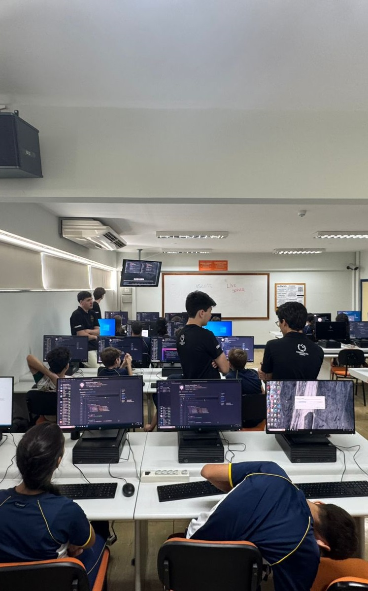

Relatório – 5ª Aula
Data: 30/03/2026
Turma: 8º e 9º ano
Instrutor: Kawan
Relatório – Introdução ao VS Code
No dia 30/03/2026, foi realizada a quarta aula com as turmas do 8º e 9º ano do Ensino Fundamental, dando continuidade ao cronograma do projeto LondrinenseTech. O encontro iniciou-se com uma revisão detalhada dos conceitos abordados anteriormente, permitindo que os alunos relembrassem a tríade da web e a função de alguns codigos do JavaScript antes de avançarem para a prática.
O foco central da aula foi a introdução ao Visual Studio Code (VS Code). Os alunos aprenderam que esta ferramenta, desenvolvida pela Microsoft, é um dos editores de código mais utilizados no mundo por oferecer recursos que facilitam a organização de projetos e a identificação de erros. Durante as explicações teóricas, houve um momento dedicado para que os estudantes testassem os códigos de JavaScript apresentados na aula passada, permitindo que vissem, pela primeira vez dentro de um ambiente profissional, como os comandos de interatividade ganham vida.
A dinâmica da aula foi participativa, com os alunos executando atividades práticas em tempo real. Enquanto o professor apresentava os componentes da interface — como a área de edição, a barra lateral de arquivos e o sistema de abas — os estudantes replicavam as configurações em suas próprias máquinas. Eles praticaram a organização de diretórios e a criação de arquivos com a extensão .js, compreendendo a importância de manter um ambiente de trabalho estruturado.
